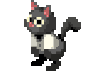

OtherWorld Legends adalah game yang dibuat oleh pengembang game Chillyroom, Otherworld Legends,dirilis pada tanggal 18 Agustus 2020. Situs ini berisi tentang game ini, dan tujuannya adalah untuk menyediakan informasi sebanyak mungkin tentang Otherworld Legends. tersedia cuma karakter sehingga para penggemar game dapat datang dan mendapatkan informasi.
Dalam Otherworld Legends, beberapa petarung dari berbagai waktu dan ruang harus bersatu untuk bertarung dalam fatamorgana yang diciptakan oleh penyihir Asurendra , untuk mengungkap sifat sebenarnya dari dunia aneh yang dipenuhi monster ini. Ada beberapa karakter berbeda untuk dipilih, masing-masing hadir dengan keahlian unik dan dapat disesuaikan yang dapat Anda gunakan dalam pertempuran. Dengan pertarungan intuitif dan animasi yang memukau, pertarungan terasa sangat memuaskan. Selain itu, Anda dapat menemukan item pertempuran di sepanjang jalan yang memiliki berbagai efek berbeda yang akan membantu Anda dalam pertempuran. Kombinasikan ini dengan level yang dihasilkan secara acak dan Anda akan mendapatkan pengalaman yang benar-benar berbeda setiap kali bermain, menghasilkan permainan yang tidak akan pernah membosankan.